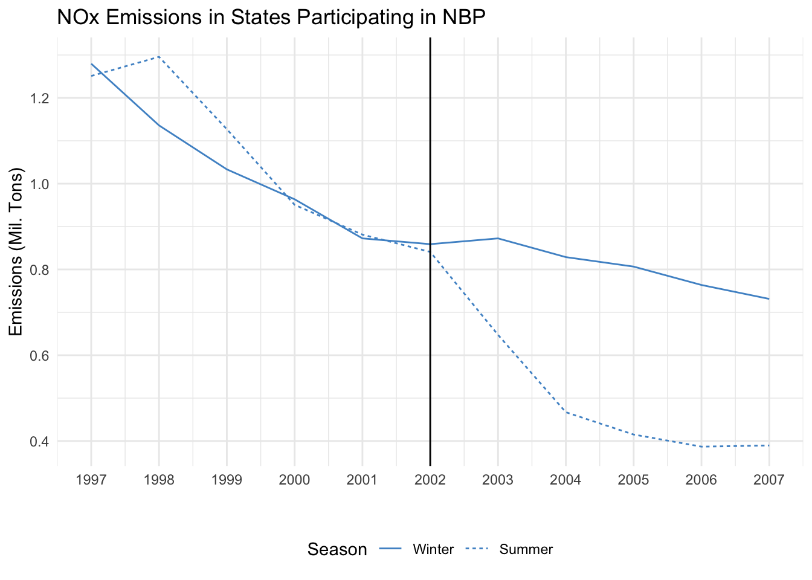
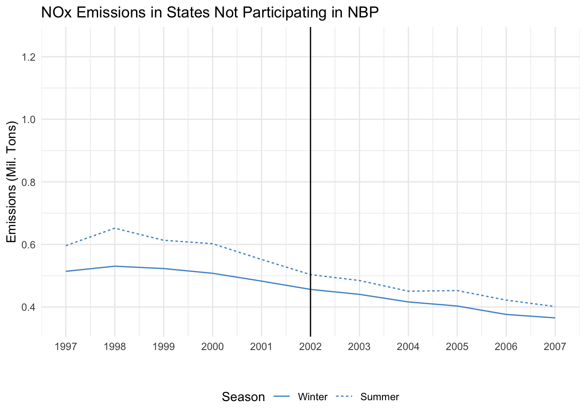

The Effect of the EPA’s NOx Budget Trading Program (NBP)
Replicating a Differences in Differences Approach
I estimate the causal effect of the U.S. EPA’s NOx Budget Trading Program (NBP) on air pollutant emissions. This project is a replication of the 2017 paper “Defensive investments and the demand for air quality: Evidence from the NOx budget program.” by Deschênes, Greenstone and Shapiro (source and citation down below). Following the paper’s methodology, I estimate the causal effects using a difference-in-differences and triple difference approach
What was the NBP pogram and what are the main variables in the data?
The NOx Budget Trading program (NBP), operated a cap-and-trade system for over 2,500 electricity generating units and industrial boilers in Eastern and Midwestern states between 2003 and 2008. The emissions market established by the program introduced three sources of emission variation. The first source, captured by the variable post, was the start of the program in 2003. The nbp dummy variable indicates if a state was part of the NBP in the 2003-2008 period. Since the market implemented by NBP only operated during the period between May 1 and September 30, it offered a third source of variation which is captured in the variable summer. In short, the program created an emissions market from 2003 to 2008 in certain states, and this market only operated during summer months.
NOx emissions in states participating in NBP

Parallel Trends Assumption:
The assumption underlying graph replicated above is that, absent of treatment, NOx emissions in states subject to the NBP policy (i.e., the treatment group) would follow the same trend as emissions in states not subject to the program (i.e., the control group). The graphical pattern in the graph suggests this assumption, commonly referred to as the parallel trends assumption, would hold as emissions in both groups of states follow the same downward trend and have similar NOx emission levels prior to the program’s implementation.
Diff-in-diff among states participating in NBP
To run a difference-in-difference regression that examines the effect of the NBP on NOx emissions among states that participated in the program, we will use the the variable for emissions, nox_emit, as the dependent variable. For the independent variables, we use the dummy variables for whether it was the summer season (i.e., May 1 to September 30) and for whether the program had been implemented, as well as their interaction. The specification is as follows:
\(NOx\_emit_{it} \sim summer_t + post_i + summer_i*post_t + \epsilon_i\)
Diff-in-Diff: Effect of NBP on NOx Emissions among Participating States
===============================================
Dependent variable:
---------------------------
NOx Emssions
-----------------------------------------------
Summer 0.034
(0.064)
Post Implementation -0.223***
(0.059)
Interaction -0.373***
(0.077)
Constant 1.024***
(0.045)
-----------------------------------------------
Observations 26,070
===============================================
Note: *p<0.1; **p<0.05; ***p<0.01 The coefficient of the interaction of the variables summer and post indicates the ‘difference-in-differences’ - that is to say the difference between the difference of the means in the summer months before and after the introduction of NBP and the difference of the winter season means before and after NBP. Specifically, the coefficient points to an average reduction of 373 thousand Tons in emissions during the summer seasons after the rollover of the NOx Budget Trading program.
NOx emissions in states not participating in NBP

Placebo Test
The graph above may seem unintuitive, since I plot emissions in non-participating states which we don’t assume will change with NBP’s introduction. It’s objective, however, is to run a placebo test for the parallel trends assumption previously discussed. The test allows us to see if emissions follow the same trends in both the summer and winter seasons when the program is not in place. If the placebo test shows equal trends in both seasons with no changes after program starts among these non-participating states, it supports the results that indicate causal links between NBP and any changes within participating states.
Diff-in-diff among non participating states
To run a difference-in-difference regression that examines the effect of the NBP on NOx emissions among non-participating states, we will employ the same the specification as in the previous diff-in-diff regression, only with data restricted to non-participating states this time.
\(NOx\_emit_{it} \sim summer_t + post_i + summer_i*post_t + \epsilon_i\)
Diff-in-Diff: Effect of NBP on NOx Emissions among Non-Participating States
===============================================
Dependent variable:
---------------------------
NOx Emssions
-----------------------------------------------
Summer 0.084**
(0.035)
Post Implementation -0.102***
(0.032)
Interaction -0.042
(0.047)
Constant 0.502***
(0.024)
-----------------------------------------------
Observations 29,788
===============================================
Note: *p<0.1; **p<0.05; ***p<0.01The coefficient of the interaction term indicates that a 40 thousand Ton fall in NOx emissions during the summer seasons among the non-participating states is associated with the implementation of NBP; however, this change is not statistically significant.
Triple-difference regression
To run a triple-difference regression that examines the effect of the NOx Budget Trading program we will again use nox_emit as the dependent variable and nbp, summer and post as the independent variables. We will regress the outcome variable on each of the independent variables, the pair interactions of nbp andsummer, nbp and post, and nbp and summer as well as the triple interaction of all three. The specification is as follows:
\(NOx\_emit_{it} \sim nbp_i + post_{it} + summer_t + nbp_t*post_{it} + post_{it}*summer_t + nbp_t*summer_t + nbp_i*post_{it}*summer_t + \epsilon_i\)
Diff-in-Diff: Effect of NBP on NOx Emissions among Non-Participating States
===============================================
Dependent variable:
---------------------------
NOx Emssions
-----------------------------------------------
NBP Participation 0.522***
Post Implementation -0.102***
(0.032)
Summer 0.084*
(0.035)
NBP*Post -0.121
Post*Summer -0.042
NBP*Summer -0.050
Triple Interaction -0.331
Constant 0.502***
(0.024)
-----------------------------------------------
Observations 55,858
===============================================
Note: *p<0.1; **p<0.05; ***p<0.01The coefficient of the triple interaction term indicates there was approximately a 33% decrease in NOx emissions during the summer season among states that participated in the program. This coefficient is the difference between the two coefficients discussed previously - i.e., the coefficients for the interaction terms of the participating states diff-in-diff and the non-participating states diff-in-diff.
Overview of Results:
The NOx Budget Trading Program established a cap-and-trade market on NOx emissions throughout counties of certain states, predominantly in the eastern United States, during the 2003 to 2007 period. Within this time frame, the policy was specifically in place during a ‘summer’ season that lasted from May until the end of September. A difference-in-differences regression of participating states, showed that after NBP’s implementation there was a reduction of over 370 thousand Tons in the average NOx emissions during the summer season. When implementing a triple-difference approach, where we account for the changes in the average emissions in non-participating states, we found a smaller reduction but nevertheless an impactful one. Specifically, the results indicated that NBP lead to a 330,000 Ton reduction, on average, per year of NOx emissions during the summer seasons. Globally, throughout the four and half years of NBP’s implementation (mid 2003 until 2008) it reduced close ro 1.5 million Tons of NOx emissions.